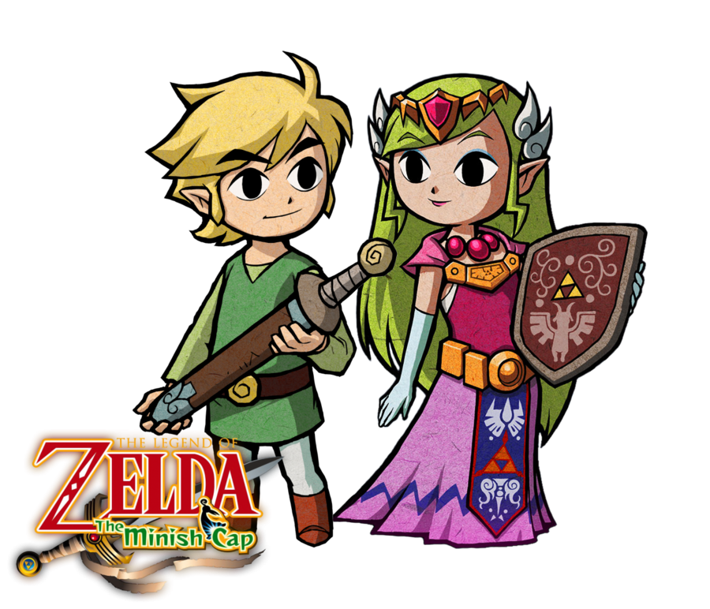

Link (リンク, Rinku?) est un personnage imaginaire et le principal héros de la série de jeux vidéo The Legend of Zelda de Nintendo. Créé par Shigeru Miyamoto, The Legend of Zelda est un des noyaux durs de Nintendo. En 2007, plus de 47 millions d’exemplaires ont été vendus à travers le monde1. La première apparition de Link date de 1986 dans le jeu The Legend of Zelda. Le personnage a été représenté dans d’autres jeux vidéo de Nintendo, mais également dans d’autres produits commerciaux dérivés comme des mangas ou encore dans un programme d’animation à la télévision. Link a été récompensé d’une étoile lors du Walk of Game en 2005, aux côtés de Mario et de Sonic le hérisson2
Du fait du titre de la série, The Legend of Zelda, Zelda est parfois confondue avec Link, le héros du jeu.MAis cependant, Link est le héros principal et Zelda la princesse a secouri
A droite vous pouvez voir zeldaet à gauche Link
Inofrmation Générales sur Zelda revenir au menu